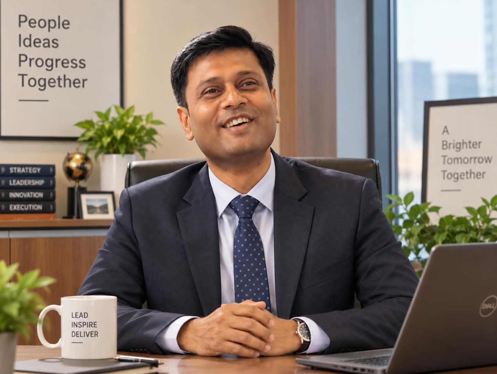

Sixteen years building and running enterprise systems at Bharat Petroleum. Now an MBA candidate at IIM Lucknow, working where finance meets software.
I'm looking for roles in finance technology, consulting and IT strategy, where I can turn business problems into working systems and back again.
Each bar is drawn to scale. Most of my career has been spent inside large systems that move money, fuel and people. The MBA is about learning the business decisions those systems serve.
Working software, mostly for problems I or my classmates actually have. Hosted on GitHub Pages, Vercel and Supabase.
Personal project, 2026
A command center for IIM Lucknow students. Deadlines, assignments, attendance and daily email reminders in one dashboard, behind Google sign-in.
Personal project, 2026
Attendance management for a whole campus, with separate roles for admins, professors and students. Sign-in is limited to the college domain.
Scrum team project, 2026
A campus sports app for equipment checkout and tournaments. As a developer on the team, I built the fixtures, live scores and standings views.
Personal project, 2026
A lightweight log of my own class attendance. Supports back-dated entries and syncs between devices.
When something in my routine is tedious, I write a small app for it. These are live and in daily use at home and on campus.
One place for my end-term revision material, organised by course.
Open the portalAn arithmetic practice app I built for a young learner at home.
Try a practice roundPlays the right Habuild class video for each weekday from Google Drive, so home practice starts with one tap.
Open the playerQuantitative models and strategy work from my internship and MBA coursework.
Summer internship, Quantropy Research and Solution LLP, 2026
Built a pipeline that scrapes annual reports of 165 listed and delisted Indian companies from BSE and NSE, extracts the Management Discussion and Analysis section, and trains embedding, CNN and BiLSTM classifiers to flag financial distress. Much of the work went into keeping the evaluation honest: company-level splits to prevent leakage, focal loss for class imbalance, and calibrated decision thresholds.
TIDPBM course project, IIM Lucknow
A platform-economics analysis of Groww benchmarked against Zerodha, covering industry structure, network effects, multi-homing, mobilization risks and business models, with a strategy and action plan.
PEMB course, IIM Lucknow
A binomial lattice model for deciding when an Indian manufacturer should invest, solved by backward induction in Excel. An earlier assignment modelled job search as an optimal stopping problem.
PEMB coursework, IIM Lucknow
Data Envelopment Analysis in Excel Solver, from basic CCR and output-oriented models to super-efficiency and cross-efficiency rankings.
Strategic Management II project, IIM Lucknow
An organisational analysis of a young Indian company, built around an interview with its founder and supported by Porter's generic strategies.
From enterprise IT to the social sector to business school.
Indian Institute of Management Lucknow
Coursework in finance, risk, quantitative methods and strategy. Summer internship in 2026 at Quantropy Research and Solution LLP on machine learning for credit risk.
Subhash Educational Society
Led a non-profit's programmes to educate underprivileged children.
Bharat Petroleum Corporation Ltd, Mumbai
Sixteen years across IT applications, support and projects at one of India's largest oil companies.
IIT (BHU), Varanasi